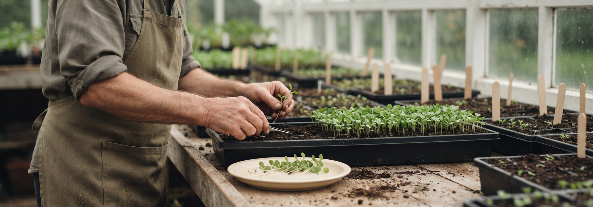

What the remover does
The tool rewrites one Python file in place with its unused import lines removed, run as python3 main.py FILEPATH [--dry-run] [--aggressive]. filepath is a required positional. Lines are only ever dropped whole.
What counts as used
Usage is judged from the syntax tree: a binding counts as used when its root name appears as a Name anywhere in the file. In non-aggressive mode a second net is laid, in which any binding mentioned inside a string constant, a lazy import path, an export list, or a getattr target is kept too, because words in string constants are treated as used. The --aggressive flag drops that net, which is all the flag changes.
Star imports are never listed and never removed.
Line rules
When one alias on a shared import line is still used, the whole line stays. An unused import sharing a line with another statement is skipped and logged as skipped rather than removed. A parenthesised import is removed across its full span of lines.
The backup rule
A real run first writes a backup at the filepath plus .bak, and refuses if that backup already exists: if it does, the run refuses to modify the file and exits 1, because the old backup may be the only copy of an earlier original.
The rewritten text is parsed before anything is written, and a rewrite that would not parse is refused with the file untouched. A dry run still runs that parse check, so a dry run can fail on a file it would never have written. A file without a .py ending draws a warning and is processed anyway. An unreadable or unparsable target exits 1.
Parameters
filepath: the Python file to rewrite. Required.--dry-run: perform a dry run without modifying the file.--aggressive: drop the string constant safety net described above.
The README parameter list omits filepath and leaves --aggressive undescribed, though the code help text describes it. That record stands as printed.
Record notes
The README clone line uses the unhyphenated ShadowGuardAI, its usage line is a placeholder, and its closing licence line reads Copyright (c) ShadowGuardAI while the LICENSE file is MIT. Those lines stand as printed.
Licence
The repository LICENSE file carries the MIT License.